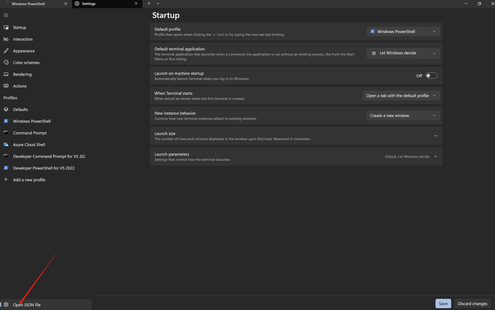
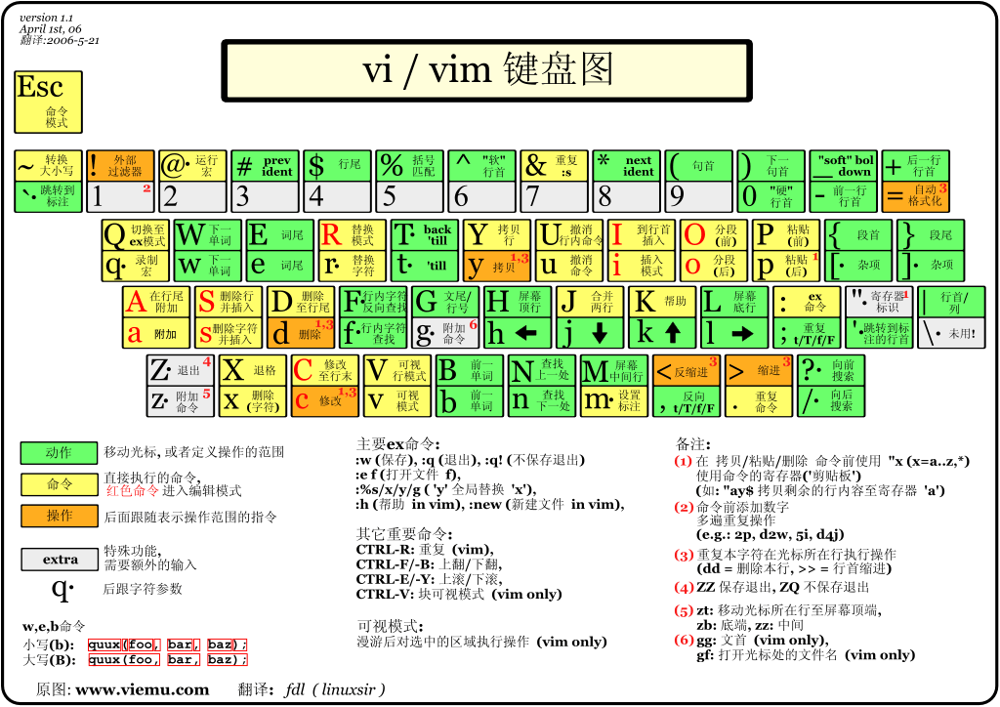

我的笔记
记录学习的内容。
tool use
Powershell
一.开启 powershell
-
win + R输入 pwsh -
管理员身份运行
ctrl + shift + enter
PowerShell 升级和 Windows Terminal 配置
- 查看 powershell 当前版本
$psversiontable
- 更新 powershell
查询 powershell
winget search powershell
- 下载微软版
winget install Microsoft.PowerShell
- 打开 json 文件 
修改为
###
"defaultProfile": "{574e775e-4f2a-5b96-ac1e-a2962a402336}",
###
"list":
[
{
"guid": "{574e775e-4f2a-5b96-ac1e-a2962a402336}",
"hidden": false,
"name": "PowerShell",
"source": "Windows.Terminal.PowershellCore"
},
]
二.文件相关命令
- 进入文件夹
cd ./
- 返回上级目录
cd ..
- 创建新文件
mkdir
- 删除文件
rm
- 移动文件
mv
- 使用 vscode 打开文件
code .
- 清空回收站
clear-RecycleBin -Force
三. 常用命令
环境变量
- 显示环境变量
gci env:
- 设置环境变量
$env:Path += <address>
网络配置
- 显示本机 ip
ipconfig
- 测试网络链接
ping <IP>
- 关闭防火墙
netsh advfirewall set allprofiles state off
- 显示网络统计信息
netstat -an
- 显示本地路由表
route print
- 配置防火墙规则
Get-NetFirewallRule
Git
一.安装 Git
- 官网下载
- 终端下载
winget install --id Git.Git -e --source winget
二.配置 Git
在 powershell 中输入git检测是否配置完成
配置用户
- 初始化 Git 仓库
git init
- 设置用户名和邮箱
git config user.name 'github用户名'
git config user.email '邮箱'
- 查看邮箱用户配置
git config --list
- 配置 git
进入 gitconfig 文件
vim ~/.gitconfig
添加以下内容
[user]
name=ptsfdtz
email=pitousanfadetuzi@gmail.com
[http]
proxy=http://127.0.0.1:7890
[https]
proxy=http://127.0.0.1:7890
[init]
defaultBranch=main
[pull]
ff=only
令 git 使用 clash 代理
三.初次提交模板
- 项目初始化
git init
echo "# README" > README.md
git add README.md
git commit -m "First commit"
- 添加远程仓库链接
git remote add origin #仓库链接
- 默认分支 main
git branch -M main
- 提交到 github 仓库
git push -f -u origin main
四.常用命令
- 查看当前状态
git status
- 查看提交记录
git log
- 回退到上一个版本
git reset --hard HEAD^
- 回退到上上个版本
git reset --hard HEAD^^
- 回退到指定版本
git reset --hard HEAD^^
- 分支相关的操作
git branch ##查看分支
git branch <name> ##创建分支
git checkout <name> ##切换分支
git checkout -b <name> ##创建+切换分支
git merge <name> ##合并某分支到当前分支
git merge --no-ff -m "..." <name> ##使用普通模式合并分支，可以显示合并历史
git branch (-m | -M) <oldbranch> <newbranch> ##重命名分支
git branch -d <name> ##删除分支
git branch -D <name> ##强行删除未合并分支
git log --graph ##查看分支合并图
git log --graph --pretty=oneline --abbrev-commit ##也可以查看分支合并图
git tag <num>
git push --tags
Docker
一.Docker 下载
windows:docker
ubuntu:
curl -fsSL https://test.docker.com -o test-docker.sh
sudo sh test-docker.sh
Docker 允许你在容器内运行应用程序， 使用 docker run 命令来在容器内运行一个应用程序。
输出 Hello world
二. 常用命令
启动一个容器:
docker run -d -p 80:80 --name webserver nginx
列出正在运行的容器：
docker ps
停止一个容器：
docker stop <CONTAINER_ID>
启动一个停止的容器：
docker start <CONTAINER_ID>
删除一个容器：
docker rm <CONTAINER_ID>
列出所有镜像：
docker images
从 Docker Hub 拉取镜像：
docker pull <IMAGE_NAME>
删除一个镜像：
docker rmi <IMAGE_ID>
查看容器日志：
docker logs <CONTAINER_ID>
获取镜像
- 从 Docker 镜像仓库获取镜像
docker pull [选项] [Docker Registry 地址[:端口号]/]仓库名[:标签]
- 使用 Docker 镜像
docker run httpd
wireguard
一.安装 wireguard
在服务端安装
- 获取 root 权限
sudo i
- 安装 wireguard 软件
apt install wireguard resolvconf -y
- 开启ip转发
echo "net.ipv4.ip_forward = 1" >> /etc/sysctl.conf
sysctl -p
二.配置服务端
配置服务端公钥和私钥
- 进入配置存储目录，调整目录权限
sudo su #切换到root用户
cd /etc/wireguard/
umask 077 #调整目录默认权限
- 生成服务器密钥
wg genkey > server.key #生成私钥
wg pubkey < server.key > server.key.pub #通过私钥生成公钥
- 生成客户端密钥(client1)
wg genkey > client1.key #生成私钥
wg pubkey < client1.key > client1.key.pub #通过私钥生成公钥
显示所有生成的密钥
cat server.key && cat server.key.pub && cat client1.key && cat client1.key.pub
创建服务器配置文件
nano /etc/wireguard/wg0.conf
添加服务器配置文件内容
[Interface]
PrivateKey = $(cat server.key) # 填写本机的privatekey 内容
Address = 10.0.8.1 #本机虚拟局域网IP
PostUp = iptables -A FORWARD -i wg0 -j ACCEPT; iptables -A FORWARD -o wg0 -j ACCEPT; iptables -t nat -A POSTROUTING -o eth0 -j MASQUERADE
PostDown = iptables -D FORWARD -i wg0 -j ACCEPT; iptables -D FORWARD -o wg0 -j ACCEPT; iptables -t nat -D POSTROUTING -o eth0 -j MASQUERADE
#注意eth0需要为本机网卡名称
ListenPort = 50814 # 监听端口
DNS = 8.8.8.8
[Peer]
PublicKey = $(cat client1.key.pub) #自动client1的公钥
AllowedIPs = 10.0.8.10/32 #客户端所使用的IP" > wg0.conf
查看你的默认网卡
ip route list table main default
如果网卡不正确更改默认网卡 将 eth0 改为enp4s0
启动服务
wg-quick up wg0 #启动wg0
wg-quick down wg0 #关闭wg0
配置客户端
- 下载客户端
下载链接：https://www.wireguard.com/install/
- 配置客户端
新建隧道
- 配置隧道
[Interface]
PrivateKey = 6M8HEZioew+vR3i53sPc64Vg40YsuMzh4vI1Lkc88Xo= #此处为client1的私钥
Address = 10.0.8.10 #此处为peer规定的客户端IP
MTU = 1500
[Peer]
PublicKey = Tt5WEa0Vycf4F+TTjR2TAHDfa2onhh+tY8YOIT3cKjI= #此处为server的公钥
AllowedIPs = 10.0.8.0/24 #此处为允许的服务器IP
Endpoint = 114.132.56.178:50814 #服务器对端IP+端口
配置防火墙
允许端口转发
- 进入配置文件
sudo vim /etc/sysctl.conf
- 编辑内容
net.ipv4.ip_forward=1
- 重启防火墙
sudo sysctl -p
重启防火墙
- 查看防火墙是否启动成功
sudo ufw status
- 如果防火墙未启动，则启动防火墙
ufw allow 51820/udp
查看是否连接成功
客户端
ping 10.0.8.1
服务器
sudo tcpdump -envi wg0
设置服务器开机启动wireguard
systemctl enable wg-quick@wg0
参考
Vim
下载
vim:下载链接
winget search vim
winget install vim.vim
vim 键盘图

命令模式
-
i:切换到输入模式 -
x:删除字符 -
::切换到底线命令模式 -
dd:删除当前行 -
yy:复制当前行 -
u:撤销上一次操作 -
:w:保存文件 -
:q:退出 vim 编辑器 -
:q!:强制退出 -
:wq:保存并退出 -
:wq!:强制保存并退出
输入模式
输入时比较符合直觉
ESC:退出输入模式
qBittorent
安装 qBittorent
Ubuntu 或者 Debian:
apt install -y qbittorrent-nox
CentOS:
yum install -y qbittorrent-nox
启动
安装完成后启动 qBittorrent：
qbittorrent-nox
访问地址、用户名、密码：
******** Information ********
To control qBittorrent, access the Web UI at http://localhost:8080
The Web UI administrator user name is: admin
The Web UI administrator password is still the default one: adminadmin
This is a security risk, please consider changing your password from program preferences
让 qBittorrent 启动后在后台运行可以输入：
qbittorrent-nox -d
常用命令
启动 qBittorrent：
qbittorrent-nox
在后台启动 qBittorrent：
qbittorrent-nox -d
查看版本：
qbittorrent-nox -v
启动 qBittorrent 并指定 Web 面板的端口：
qbittorrent-nox --webui-port=2333
上面指定 2333 端口。
查看帮助：
qbittorrent-nox -h
nano
build
mdbook
- 安装 mdbook
- 配置 mdbook 环境
配置你的下载文件到环境变量中Path路径中
- 安装 vscode 预览插件
vscode 拓展中下载
-
Markdown All in One
-
Markdown Preview Enhanced
- mdbook 编译和预览
- 编译 mdbook
mdbook build
mdbook build -o
-预览 mdbook
mdbook watch -o
mdbook 会自动编译项目，无需手动编译
react
- 安装 node.js
https://nodejs.org/en
- 搭建 React 脚手架
npx create-react-app my-react-app
- 启动本地开发服务器
npm start
- 项目初始化
openwrt
安装镜像
树莓派
- 安装 Raspberry Pi Imager
https://www.raspberrypi.com/software/
- 使用ssh远程服务
开启 SSH 服务，设置 username and password，配置 WiFi
- 用户名
user - 密码
password
- 固件升级
sudo apt update
sudo apt full-upgrade
linux
常用命令
- 以 root 权限执行
sudo #
- 文件
ls #列出当前目录下文件
pwd #输出当前目录
cd #改变目录
mkdir #新建目录
cat #显示文件内容
rm #删除目录
mv #移动目录
cp #复制目录
显示在终端输入内容
echo #
读取系统时间
date #
全面搜索正则表达式
grep #
显示命令使用手册
man #
安装软件包
apt-get
退出
exit
重新启动
reboot
vim
git
下载 git
sudo apt update
sudo apt install git
learn
react
安装 Node.js
Node.js 是一个基于 Chrome V8 引擎的 JavaScript 运行环境，可以让 JavaScript 运行在服务器端。
下载：https://nodejs.org/zh-cn/download/package-manager
使用creact-react-app创建React项目
npx create-react-app my-app
cd my-app
npm start
文件目录
my-app
├── README.md
├── node_modules // 依赖包
├── package.json // 项目配置文件
├── .gitignore
├── public
│ ├── favicon.ico
│ ├── index.html
│ └── manifest.json
└── src
├── App.css
├── App.js // 入口文件
├── App.test.js // 测试文件
├── index.css // 全局样式文件
├── index.js // 入口文件
└── logo.svg
两个核心库
react： React 核心库，提供react的各个功能
react-dom： 提供一些dom操作方法，比如渲染、更新、删除等
react项目组件关系:

组件分类
组件化开发，定义一个基本组件得有东西
-
组件html模板
-
数据和方法
组件类型
1. 函数组件
function HelloWorld() { // 新版本的组合是api
return <h1>Hello World</h1>;
}
2. 类组件
class Hello extends React.Component { // 老版本的组合是createClass
render() {
return <div>Hello World</div>;
}
}
example:
import './App.css';
import React from 'react';
function App() {
function HelloWorld() {
return <div>Hello World</div>;
}
class ClassHello extends React.Component {
render() {
return <div>Hello World</div>;
}
}
return (
<div className="App">
<HelloWorld />
<ClassHello />
</div>
);
}
export default App;
jsx语法
jsx 的特点
直接js中混用: React项目利用babel做了对js的编译，jsx可以直接写在js文件中，这样可以更方便的与js代码混用。
写法接近js: jsx的语法和js很相似，不同点在于，可以更方便的写html在js里，写在js里的html代码会被编译成js对象，我们也可以使用creatElement方法来创建这个对象。
import './App.css';
import React from 'react';
function App() {
function HelloWorld() {
return React.createElement("div", [null], "Hello World")
}
return (
<div className="App">
<HelloWorld />
</div>
);
}
export default App;
jsx 代码的本质
编写jsx代码的本质，最终显示的结果是React.createElement()方法的调用。

也可以使用let来定义，然后在jsx中使用。不需要使用尖括号，只需要使用花括号包裹，在jsx中使用<>会解析为React.createElement()方法。
import './App.css';
import React from 'react';
function App() {
function HelloWorld() {
return <div>Hello World</div>;
}
let hello = HelloWorld();
return (
<div className="App">
{hello}
<HelloWorld />
</div>
);
}
export default App;
渲染规则
| 规则 | 描述 |
|---|---|
| 字符串，数字 | 直接渲染 |
| 对象 | 只能渲染element对象 |
| 数组 | 数组中的每一项都渲染 |
| 表达式 | 运行表达式，并渲染结果 |
| 方法 | 无法渲染 |
| 布尔值，null，undefined | 不渲染任何内容 |
事件绑定
React 组件的事件绑定与 DOM 元素的事件绑定有些不同。
在 React 中，事件绑定是通过 JSX 语法来实现的。
import './App.css';
import React from 'react';
class App extends React.Component {
render() {
return <div className="App" >
<div onClick={() => {
console.log("clicked");
}}>button</div>
</div>;
}
}
export default App;
在 JSX 中，事件绑定通过 on 开头的属性来实现。
如上例，onClick 事件绑定到 <div> 元素上，当该元素被点击时，会执行 console.log("clicked") 方法。
this 绑定
改变this指向的方法:
- 给方法调用bind规定this指向
- 使用一个匿名箭头函数
- 方法本身写为箭头函数
通过箭头函数来绑定事件时，this 关键字会指向组件实例，而不是 DOM 元素。
import './App.css';
import React from 'react';
class App extends React.Component {
f1() {
console.log(this);
}
render() {
return <div className="App" >
<div onClick={() => {
console.log(this);
}}>button</div>
</div>;
}
}
export default App;
事件绑定其他操作
- 传递参数
- 阻止默认行为
class App extends React.Component {
f1 = (a, b) => {
console.log(a + b);
}
render() {
return <div className="App" >
<div onClick={this.f1.bind(this, 1, 2)}>button</div>
</div>;
}
}
响应式数据
jsx 语法中，可以直接绑定数据，这样当数据发生变化时，组件会自动重新渲染。
class App extends React.Component {
state = {
a: 1,
}
render() {
return <div className="App">
{this.state.a}
</div>
}
}
这样，当 this.state.a 发生变化时，组件会自动重新渲染。
但是，如果 this.state.a 是一个对象，那么当对象中的某个属性发生变化时，组件不会自动重新渲染。
我们需要使用 setState 方法来更新状态，并且传入一个函数作为参数，函数接收当前状态作为参数，返回新的状态。
class App extends React.Component {
state = {
a: 1,
}
addA = () => {
this.setState({
a: this.state.a + 1
})
}
render() {
return <div className="App">
{this.state.a}
<button onClick={this.addA}>Add A</button>
</div>
}
}
这样，当 this.state.a 发生变化时，组件会自动重新渲染。

调用setState方法才会触发更新，修改state不会触发刷新。
setState方法是异步的，要获取修改后的值，需要通过回调函数。
this.setState({
a: this.state.a + 1
}, () => {
console.log(this.state.a)//这样，在setState方法执行完毕后，才会执行回调函数，并获取修改后的值。
})
PureComponent
PureComponent 是一个高阶组件，它会对 props 和 state 进行浅比较，只有当 props 和 state 发生变化时才会重新渲染。
class App extends PureComponent {
state = {
a: 1,
}
addA = () => {
this.setState({
a: this.state.a + 1
})
}
render() {
return <div className="App">
{this.state.a}
<button onClick={this.addA}>Add A</button>
</div>
}
}
条件渲染和列表循环
React没有指令，一切操作的本质都是通过计算生成不同的内容，拿去渲染，得到不同的页面。
条件渲染的本质
原则：
- react渲染undefined,null,false,空字符串不会渲染成任何内容。
- 如果渲染一个jsx编写的html元素，就会渲染成页面上的内容。

class App extends React.Component {
state = {
show: true
}
f1() {
if (this.state.show) {
return <div>Hello World</div>
} else {
return null
}
}
render() {
return <div className="App">
{this.f1()}
<button onClick={() => {
this.setState({
show: !this.state.show
}
)
}}>{this.state.show ? 'Hide' : 'Show'}</button>
</div>
}
}
列表循环的本质
原则
-
渲染一个数组会把数组里的每一项单独取出渲染
-
那么我们编写一个里面存放的都是html结构的数组，就会渲染成列表。
class App extends React.PureComponent {
state = {
originArr: [1, 2, 3, 4, 5]
}
addData = () => {
let _arr = [...this.state.originArr]
_arr.push(Math.random() * 10);
this.setState({
originArr: _arr
})
}
render() {
return <div className="App">
<div>列表渲染</div>
{this.state.originArr.map((item) => { return <div key={item}>{item}</div> })}
<button onClick={this.addData}>addData</button>
</div>
}
}
表单绑定
React 中很多思路都是按原生的操作去做的，表单绑定也是一样的。
原生表单获取表单输入值，我们可以通过监听input，change等事件，然后获取e.target.value
如果想要设置表单的值，通常设置value属性即可，如果是选择框则是checked属性。
输入框绑定
class App extends React.PureComponent {
state = {
inputValue: ''
}
render() {
return <div className="App">
{this.state.inputValue}
<input value={this.state.inputValue} onInput={(e) => {
this.setState({ inputValue: e.target.value });
}} />
</div>
}
}
选择框绑定
class App extends React.PureComponent {
state = {
checkedArr: ["first"]
}
handleCheck = (e) => {
let arr = [...this.state.checkedArr]
if (e.target.checked) {
arr.push(e.target.value)
} else {
arr.splice(arr.indexOf(e.target.value), 1)
}
this.setState({ checkedArr: arr })
}
render() {
return <div className="App">
{this.state.checkedArr}
<input checked={this.state.checkedArr.indexOf("first") !== -1} onChange={this.handleCheck} value="first" type="checkbox" name="choose" />选项1
<input checked={this.state.checkedArr.indexOf("second") !== -1} onChange={this.handleCheck} value="second" type="checkbox" name="choose" />选项2
<input checked={this.state.checkedArr.indexOf("third") !== -1} onChange={this.handleCheck} value="thrid" type="checkbox" name="choose" />选项3
</div>
}
}
其他原生表单元素的绑定，比如textarea，radio，select等，都是类似的。
Props 和组件间传值，插槽
props 是 react组件的核心
在react中，一切写在组件上的属性和子节点都被视为规划为了props。
所以props是很多react功能的根本。父子component之间的通信，状态管理，以及组件的复用都离不开props。
class App extends React.PureComponent {
state = {
mes: "hello son"
}
render() {
return <div className="App">
i am App
<Son mes={this.state.mes}>
<div>
i am son
</div>
</Son>
</div>
}
}
class Son extends React.Component {
state = {
sonMes: 'Hello'
}
render() {
console.log(this.props);
return <div>
{this.props.mes}
{this.state.sonMes}
i am son of App
</div>
}
}
props的类型验证和默认值
Son.propsType = {
mes: function (props) {
if (typeof props.mes !== 'string') {
throw new Error('mes must be a string');
}
}
}
Son.defaultProps = {
mes: 'default message',
}
React.PropTypes 已经被废弃，建议使用 PropTypes 来代替。
Son.propsType = {
mes: PropTypes.string.isRequired,
}
插槽
插槽的本质就是子组建的html内容需要父组件传入，在jsx的加持下，我可以把html想普通的字符串，数字一样传递，所以插槽只需要直接作为props传入就行

render() {
return <div className="App">
<Son a={<div>i am a</div>} scopeslot={(scope) => { return <div>{scope}</div> }} mes={this.state.mes}>
<div>i am slot</div>
</Son>
</div>
}
class Son extends React.Component {
state = {
sonMes: 'Hello'
}
render() {
return <div>
{this.props.a}
{this.props.mes}
{this.state.sonMes}
{this.props.children}
{this.props.scopeslot(this.state.sonMes)}
</div>
}
}
插槽可以做到父子组件之间传递信息，并且可以自定义html内容，可以让父组件更加灵活的控制子组件的显示。

class App extends React.PureComponent {
state = {
mes: "i am App"
}
changeMes(sonmes) {
this.setState({
mes: sonmes
})
}
render() {
return <div className="App">
<Son mes={this.state.mes} changeMes={this.changeMes.bind(this)}> </Son>
</div>
}
}
class Son extends React.Component {
state = {
sonMes: 'Hello'
}
render() {
return <div>
{this.props.mes}
<button onClick={() => {
this.props.changeMes(this.state.sonMes);
}}>Change</button>
</div>
}
}
父组件通过changeMes方法改变子组件的状态，子组件通过props.changeMes方法改变父组件的状态。
样式设置
class 和 style
class
- 必须写为className
- 类名和样式写在css文件里
- 必须接受一个字符串
style
- 不能像原生一样写成字符串，必须写成对象
<div className='father' style={
{
color: 'white'
, backgroundColor: 'blue'
}}>father
</div>
1. 如何做到组件专用CSS
新建一个.module.css文件，然后在组件里导入，然后在style里用className来引用。
import React from 'react';
import sonStyle from './Son.module.css';
class Son extends React.Component {
state = {
sonMes: 'Hello'
}
render() {
return <div>
<div className={sonStyle.son + " " + sonStyle.son1}>son</div>
</div>
}
}
export default Son;
.son {
background-color: pink;
}
.son1 {
color: blue
}
2. 如何更舒服的控制类名的添加和减少
普通的方式，不借助第三方库
class Son extends React.Component {
state = {
sonMes: 'Hello',
hasSon1: true,
}
render() {
return <div>
<div className={"son" + (this.state.hasSon1 ? " son1" : "")}>son</div>
<button onClick={() => { this.setState({ hasSon1: true }) }}>添加</button>
<button onClick={() => { this.setState({ hasSon1: false }) }}>移除</button>
</div>
}
}
使用classnames库，可以更方便的控制类名的添加和减少
import React from 'react';
import classNames from 'classnames';
import './Son.css';
class Son extends React.Component {
state = {
hasSon1: true,
}
render() {
return <div>
<div className={classNames({ son: true, son1: this.state.hasSon1 })}>son1</div>
<button onClick={() => { this.setState({ hasSon1: true }) }}>添加</button>
<button onClick={() => { this.setState({ hasSon1: false }) }}>移除</button>
</div>
}
}
export default Son;
如果要配合使用模块化，要引入classnames的bind文件夹，然后在组件里绑定一下
import React from 'react';
import classNames from 'classnames/bind';
import sonStyle from './son.module.css';
let bindClassnames = classNames.bind(sonStyle);
class Son extends React.Component {
state = {
hasSon1: true,
}
render() {
return <div>
<div className={bindClassnames({ son: true, son1: this.state.hasSon1 })}>son1</div>
<button onClick={() => { this.setState({ hasSon1: true }) }}>添加</button>
<button onClick={() => { this.setState({ hasSon1: false }) }}>移除</button>
</div>
}
}
export default Son;
生命周期
react组件的生命周期可以分为三个阶段：
1. 挂载阶段： 组件被创建并插入到DOM中，此时组件的状态是未知的，组件的属性和状态都可以被设置。 2. 更新阶段： 组件的状态发生变化，组件需要重新渲染，此时组件的属性和状态都可以被更新。 3. 卸载阶段： 组件从DOM中移除，此时组件的状态也会被销毁。

constructor(props)
挂载时独有的初始化方法，在这个方法中，可以对组件的状态进行初始化。
render()
一个很重要的生命周期，它返回一个React元素，描述了组件在屏幕上应该呈现的内容。
传入props,setState(),forceUpdate()等方法可以触发更新。
shouldComponentUpdate()
一个函数，在组件接收到新的props或state时，会调用这个函数，用来判断是否需要更新组件。通常在render之前
React update DOM and refs
当组件的状态发生变化时，会调用render方法重新渲染组件，然后React更新DOM并更新组件的refs。
example
import './App.css';
import React from 'react';
class App extends React.PureComponent {
constructor(props) {
super(props);
this.state = {
mes: 'hello'
}
}
static getDerivedStateFromProps() {
console.log('getDerivedStateFromProps');
return null;
}
render() {
console.log('render');
return <div className="App">
</div>
}
componentDidMount() {
console.log('componentDidMount');
}
}
export default App;
严格模式
严格模式只在开发模式下生效，生产上线时会去除，作用简要概括有两方面的作用
- 检测一些危险的操作（比如直接修改this.state,使用废弃的api等）
- 会把一些生命周期执行两次，来检测额外副作用（比如render）
重点生命周期
render: 通过render函数的执行来决定组件渲染什么内容，所以无论更新还是初次挂载否必须执行render
componenDidMount: 组件挂载完成后触发，一般在这里做一些异步请求，获取数据，初始化组件的状态等操作
shouldComponentUpdate: 组件是否需要更新，如果返回false，则不会触发render函数，如果返回true，则会触发render函数,一般用来做性能优化
componentDidUpdate: 组件更新完成后触发，一般在这里做一些异步请求，获取数据，初始化组件的状态等操作
componentWillUnmount: 组件卸载前触发，一般在这里做一些清理工作，比如清除定时器，取消网络请求等
-ref 和 context
**ref：**用于获取真实dom
1. ref必须在挂载后才能获取，通常在componentDidMount中获取 2. ref获取组件，不能获取函数组件
import './App.css';
import React from 'react';
import Son from './Son.js';
let div1 = React.createRef();
let sonCom = React.createRef();
class App extends React.PureComponent {
state = {
mes: "父组件"
}
componentDidMount() {
console.log(div1.current);
console.log(sonCom.current.f1());
}
render() {
return <div className="App">
<div>
{this.state.mes}
</div>
<Son ref={sonCom}></Son>
</div>
} a
}
export default App;
import React from 'react';
class Son extends React.Component {
state = {
sonMes: "子组件"
}
f1() {
console.log("子组件f1");
}
render() {
return (
<div> </div>
);
}
}
export default Son;
context： 用于嵌套很深的爷孙组件之间context共享数据
1. 子组件使用父组件创建的context对象，不能自己创建
App.jsx
import './App.css';
import React from 'react';
import Son from './Son.js';
let sonCom = React.createRef();
export let Context1 = React.createContext();
class App extends React.PureComponent {
state = {
mes: "父组件",
passMes: "pass message"
}
render() {
return <div className="App">
<div>
{this.state.mes}
</div>
<Context1.Provider value={{ mes1: this.state.passMes, mes2: "pass message 2" }}>
<Son ref={sonCom}></Son>
</Context1.Provider>
</div>
} a
}
export default App;
GrandSon.jsx
import React from 'react';
import { Context1 } from './App';
class GrandSon extends React.Component {
state = {
grandsonMes: "孙子组件"
}
f1() {
console.log("孙子组件f1");
}
render() {
return (
<div className='grandSon'>
{this.state.grandsonMes}
<Context1.Consumer>
{
(value) => {
return <div>{value.mes1}</div>
}
}
</Context1.Consumer>
</div>
);
}
}
export default GrandSon;
函数组件和hooks
函数组件和类组件的主要区别
- 函数组件没有生命周期
- 函数组件没有this
- 函数组件通过hook来完成各种操作
- 函数组件本身的函数体相当于render函数
- props在函数的第一个参数接受
相当于render函数，return 的内容相当于组件的html
一.state的创建和更新

import { useState } from "react";
function App() {
let [msg, setMsg] = useState("hello");
return <div>
{msg}
<button onClick={() => { setMsg("hello world") }}>change message</button>
</div>
}
export default App;
useState函数返回一个数组，第一个元素是当前状态，第二个元素是更新状态的函数。
二.useEffect: 定义副作用,useEffect开始就会执行一次
- 不传第二个参数 =
componentDidMount和componentDidUpdate - 第二个参数传空数组 =
componentDidMount - 第二个参数数组里放某个数据 = watch监听
import { useEffect, useState } from "react";
function App() {
let [msg, setMsg] = useState("hello");
let [msg2, setMsg2] = useState("world");
useEffect(() => {
console.log("effect");
}, [msg]);
return <div>
{msg}
{msg2}
<button onClick={() => { setMsg("hello world") }}>change message</button>
<button onClick={() => { setMsg2("goodbye") }}>change message 2</button>
</div>
}
export default App;
运行button点击后，会打印effect，因为msg是依赖项，所以会重新执行useEffect，但是第二个并不会重新执行。
三.useMemo: 让一段计算在开始运行一次，后续只有依赖的数据发生变化才会重新计算。
- 类似于vue的一个计算属性的效果
- 缓存一个数据，让其不会重新创建
import { useEffect, useState, useMemo } from "react";
function App() {
let [msg, setMsg] = useState("hello");
let [msg2, setMsg2] = useState("world");
let [arr, setArr] = useState([1, 2, 3]);
let all = useMemo(() => {
let all = 0;
arr.forEach((item) => { all += item; })
return all;
}, [arr])
useEffect(() => { console.log("effect"); }, [msg]);
return <div>
<div>{msg} <button onClick={() => { setMsg("hello world") }}>change message</button></div>
<div>{msg2} <button onClick={() => { setMsg2("goodbye") }}>change message 2</button></div>
<div>{all} <button onClick={() => { let _arr = [...arr, 4]; setArr(_arr) }}>change array</button></div>
</div>
}
export default App;
点击按钮后，只有msg2和arr发生变化，all才会重新计算。
四.useCallback: 缓存一个函数，让其不会每次更新都重新创建。
let changemsg = useCallback(() => { setMsg("hello world") }, [msg]);
其他一些hook
useRef: 获取dom节点,函数组件中使用ref
useContext: 更方便的解析context的provider的数据
import { useContext } from "react";
import { Context1 } from "./App";
function Son() {
let value = useContext(Context1);
console.log(value);
return <div>Son</div>;
}
export default Son;
函数组件中传递context数据，需要用到useContext
总结
useMemo,useEffect,useCallback 第二个参数的作用都是有意义的
Hook还有很多，hook只能用于函数组件中，不能用于类组件中。
高阶组件
逻辑复用： 如果是UI内推和操作的复用我们会使用组件，但是如果是逻辑复用，比如一个组件需要实现多个功能，我们就需要使用高阶组件。
TestHoc.js
import React from 'react';
export default function TectHoc(UserCom) {
return class extends React.Component {
state = {
x: 0,
y: 0
}
componentDidMount() {
window.addEventListener("mousemove", (e) => {
let x = e.clientX;
let y = e.clientY;
this.setState({
x: x,
y: y
})
})
}
render() {
return <>
< UserCom x={this.state.x} y={this.state.y} {...this.props}></UserCom >
</>
}
}
}
Son.js
function Son(props) {
return <div>X: {props.x} Y: {props.y}</div>
}
export default Son;
App.js
import TestHoc from "./TestHoc";
import Son from "./Son.js";
let HocSon = TestHoc(Son);
function App() {
return <div>
<HocSon></HocSon>
</div>
}
export default App;
这样就可以监看鼠标的位置了。
什么时候用高阶组件：
- 组件既是包含了UI界面的复用，也包含了逻辑的复用
- 高阶组件：高阶组件只是操作逻辑变化才需要使用
React的性能问题和优化
React最大的性能问题就是某个组建的更新会连带着，子组件一起更新。
虚拟dom对比和计算绘画很大时间，这样会阻塞浏览器的工作，react的方案是使用--时间切片，先计算一部分更新，再让渡给浏览器渲染。
React渲染逻辑

fiber
为了支持这种切片，我们需要把更新化成一个个单元，然后我们也必须有回复上一次计算进度的能力。
所以react设计一种数据结构--fiber，它是一种树结构，每个节点代表一个更新单元，它包含了组件的类型、props、state、context、hooks等信息。